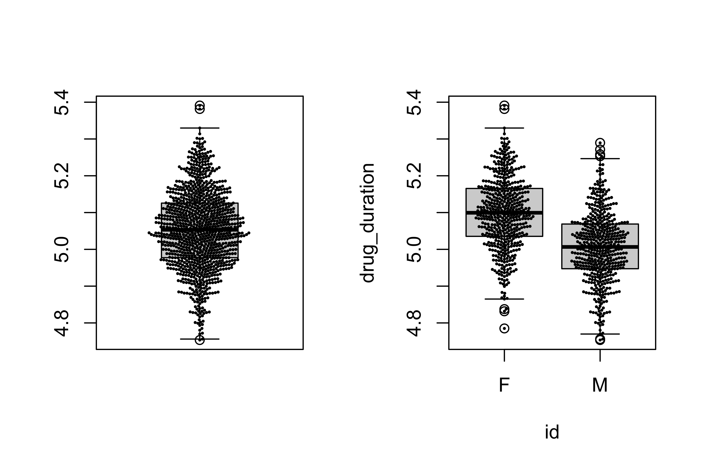

Last updated: 2022-10-26
Checks: 7 0
Knit directory:
~/Projects/STAT5014_Fall2022/
This reproducible R Markdown analysis was created with workflowr (version 1.7.0). The Checks tab describes the reproducibility checks that were applied when the results were created. The Past versions tab lists the development history.
Great! Since the R Markdown file has been committed to the Git repository, you know the exact version of the code that produced these results.
Great job! The global environment was empty. Objects defined in the global environment can affect the analysis in your R Markdown file in unknown ways. For reproduciblity it’s best to always run the code in an empty environment.
The command set.seed(20210816) was run prior to running
the code in the R Markdown file. Setting a seed ensures that any results
that rely on randomness, e.g. subsampling or permutations, are
reproducible.
Great job! Recording the operating system, R version, and package versions is critical for reproducibility.
Nice! There were no cached chunks for this analysis, so you can be confident that you successfully produced the results during this run.
Great job! Using relative paths to the files within your workflowr project makes it easier to run your code on other machines.
Great! You are using Git for version control. Tracking code development and connecting the code version to the results is critical for reproducibility.
The results in this page were generated with repository version 337eaf4. See the Past versions tab to see a history of the changes made to the R Markdown and HTML files.
Note that you need to be careful to ensure that all relevant files for
the analysis have been committed to Git prior to generating the results
(you can use wflow_publish or
wflow_git_commit). workflowr only checks the R Markdown
file, but you know if there are other scripts or data files that it
depends on. Below is the status of the Git repository when the results
were generated:
Ignored files:
Ignored: analysis/.Rhistory
Ignored: analysis/Week_2_Reproducible_research_Git_Good_Programming_Practices_cache/
Ignored: sensory_raw.RDS
Unstaged changes:
Modified: analysis/Week_5_matrix_vector_math.Rmd
Modified: analysis/_site.yml
Note that any generated files, e.g. HTML, png, CSS, etc., are not included in this status report because it is ok for generated content to have uncommitted changes.
These are the previous versions of the repository in which changes were
made to the R Markdown
(analysis/Week_6_wrangling_munging_tidying.Rmd) and HTML
(docs/Week_6_wrangling_munging_tidying.html) files. If
you’ve configured a remote Git repository (see
?wflow_git_remote), click on the hyperlinks in the table
below to view the files as they were in that past version.
| File | Version | Author | Date | Message |
|---|---|---|---|---|
| Rmd | 9d18393 | rsettlag | 2022-10-12 | updating week 6/7 |
| html | 9d18393 | rsettlag | 2022-10-12 | updating week 6/7 |
| Rmd | fc9d8d4 | rsettlag | 2022-10-11 | cleaning up week 6 |
| html | fc9d8d4 | rsettlag | 2022-10-11 | cleaning up week 6 |
| Rmd | aceb963 | rsettlag | 2022-10-05 | Week 6 |
| html | aceb963 | rsettlag | 2022-10-05 | Week 6 |
---
title: "RMarkdown for reports"
author: "Robert Settlage"
date: "05 Oct 2022"
output:
html_document:
code_folding: none
df_print: paged
highlight: tango
number_sections: yes
theme: flatly
toc: yes
toc_depth: 2
pdf_document:
toc: yes
toc_depth: '2'
---Have a code chunk devoted to Knitr or other formatting options. This has no bearing on the analysis, so don’t need to include it in an appendix.
## good place to setup you standard Rmarkdown/Knitr options
knitr::opts_chunk$set(
echo = FALSE,
eval = TRUE,
message = FALSE,
warning = FALSE,
dpi = 300,
fig.align = "center"
)Have another code chunk devoted to library loads. These are important in the analysis, may want to show…
library(knitr)
library(data.table)
library(tidyverse)https://aureliencallens.github.io/2022/09/21/web-scraping-indeed-with-r/
Data wrangling or munging is the process of going from raw to useful data. This can be 60-80% of the time spent on a project. Data Wrangling Cheatsheet Steps may include any or all of the following:
| Step | Examples |
|---|---|
| Import |
|
| Clean |
|
| Reformat |
|
We will cover different input formats next week, just some advice this week:
#google "how to get data into R"
url<-"http://www2.isye.gatech.edu/~jeffwu/wuhamadabook/data/Sensory.dat"
sensory_raw<-read.table(url, header=F, skip=1, fill=T, stringsAsFactors = F)
# read.table is ok, I prefer fread (in data.table package)
saveRDS(sensory_raw,file="sensory_raw.RDS")
sensory_raw <- readRDS("sensory_raw.RDS")If you are getting data from the internet, it is a good idea to protect against:
I generally pull the data down, then save the data to an .Rds file. My project includes:
?str, ?summary, group_by and dplyr, should mention doBy package
Sometimes, a picture really is worth a 1000 words.
library(beeswarm)
sex <- (runif(1000)>0.5)*1
drug_duration <- sex*0.1 + rnorm(1000, 0, 0.1) + 5
drug_info <- data.frame(cbind(drug_duration,sex))
drug_info$id <- ifelse(drug_info$sex==0,"M","F")
# A tibble: 13 × 6
dataset mean_x mean_y std_dev_x std_dev_y corr_x_y
<glue> <dbl> <dbl> <dbl> <dbl> <dbl>
1 Dataset: 1 54.3 47.8 16.8 26.9 -0.0641
2 Dataset: 2 54.3 47.8 16.8 26.9 -0.0686
3 Dataset: 3 54.3 47.8 16.8 26.9 -0.0683
4 Dataset: 4 54.3 47.8 16.8 26.9 -0.0645
5 Dataset: 5 54.3 47.8 16.8 26.9 -0.0603
6 Dataset: 6 54.3 47.8 16.8 26.9 -0.0617
7 Dataset: 7 54.3 47.8 16.8 26.9 -0.0685
8 Dataset: 8 54.3 47.8 16.8 26.9 -0.0690
9 Dataset: 9 54.3 47.8 16.8 26.9 -0.0686
10 Dataset: 10 54.3 47.8 16.8 26.9 -0.0630
11 Dataset: 11 54.3 47.8 16.8 26.9 -0.0694
12 Dataset: 12 54.3 47.8 16.8 26.9 -0.0666
13 Dataset: 13 54.3 47.8 16.8 26.9 -0.0656Import data from a girder strength experiment described in Wu and Hamada’s Experiment Design book. This data has shear strength data obtained by 10 different methods on 9 different girders.
url <- "https://www2.isye.gatech.edu/~jeffwu/wuhamadabook/data/fullgirder.dat"
girder_raw<-read.table(url, header=F, skip=0, fill=T, stringsAsFactors = F)
# read.table is ok, I prefer fread (in data.table package)
# actually, now I also prefer readr::read_delim
saveRDS(girder_raw,file="girder_raw.RDS")
girder_raw <- readRDS("girder_raw.RDS")Now that we have the data in R, we need to get it into a useable format. One idea for a set of standards for structuring a data set is to create a so called “tidy” data set.
http://vita.had.co.nz/papers/tidy-data.html
Essentially, we need to reformat the data such that:
Any other structure to the data is considered messy. Sound easy?
OK, what is wrong with this?
| treatmenta | treatmentb | |
|---|---|---|
| John Smith | NA | 2 |
| Jane Doe | 16 | 11 |
| Mary Johnson | 3 | 1 |
What we want is something more akin to a model:
\[ y_i = \beta_1 x_{i1} + \beta_2 x_{i2} ... \]
The point in data munging is efficiently transforming and cleaning data to bring it into a usable state. In the example above, we saw functions from plyr and tidyr (look up tidyverse) used for to create a data “pipeline”. You may find other solutions that suit you better.
tidy_data1_df<-cbind(messy_data1_df,names=rownames(messy_data1_df))
tidy_data1_df<-rbind(tidy_data1_df,tidy_data1_df)
tidy_data1_df[4:6,1]<-tidy_data1_df[4:6,2]
tidy_data1_df$treatmentb<-rep(c("a","b"),each=3)
colnames(tidy_data1_df)<-c("value","treatment","names")
rownames(tidy_data1_df)<-NULL
tidy_data1_df<-tidy_data1_df[,c(3,2,1)]
tidy_data1_df$value<-as.numeric(tidy_data1_df$value) tidy_data1_df<-messy_data1_df %>%
tibble::rownames_to_column() %>%
gather("treatment","value",treatmenta:treatmentb) %>%
mutate(treatment=str_replace(treatment,"treatment","")) %>%
mutate(value=as.numeric(value))
knitr::kable(tidy_data1_df,format = "markdown", caption="Tidy Data")| rowname | treatment | value |
|---|---|---|
| John Smith | a | NA |
| Jane Doe | a | 16 |
| Mary Johnson | a | 3 |
| John Smith | b | 2 |
| Jane Doe | b | 11 |
| Mary Johnson | b | 1 |
https://www.rstudio.com/wp-content/uploads/2015/02/data-wrangling-cheatsheet.pdf
Ok, what about python?
| R | Python |
+=============+================+ +————-+—————-+ | mutate | - assign | | select | - filter | | rename | - rename | | filter | - query | | arrage | - sort_values | | group_by | - groupby | | summarize | - agg | +————-+—————-+ | Reformat | - melt | | | - pivot | +————-+—————-+
Reshaping post:
https://nikgrozev.com/2015/07/01/reshaping-in-pandas-pivot-pivot-table-stack-and-unstack-explained-with-pictures/
name
1 base
2 r-reticulate
3 stat5014
python
1 /Users/rsettlag/Library/r-miniconda-arm64/bin/python
2 /Users/rsettlag/Library/r-miniconda-arm64/envs/r-reticulate/bin/python
3 /Users/rsettlag/Library/r-miniconda-arm64/envs/stat5014/bin/python carat cut color clarity depth table price x y z
0 0.23 Ideal E SI2 61.5 55.0 326 3.95 3.98 2.43
1 0.21 Premium E SI1 59.8 61.0 326 3.89 3.84 2.31
2 0.23 Good E VS1 56.9 65.0 327 4.05 4.07 2.31
3 0.29 Premium I VS2 62.4 58.0 334 4.20 4.23 2.63
4 0.31 Good J SI2 63.3 58.0 335 4.34 4.35 2.75 carat
mean
color
G 0.771190
E 0.657867
D NaN
F NaN
H NaN
I NaN
J NaN
R version 4.2.1 (2022-06-23)
Platform: aarch64-apple-darwin20 (64-bit)
Running under: macOS Monterey 12.4
Matrix products: default
BLAS: /Library/Frameworks/R.framework/Versions/4.2-arm64/Resources/lib/libRblas.0.dylib
LAPACK: /Library/Frameworks/R.framework/Versions/4.2-arm64/Resources/lib/libRlapack.dylib
locale:
[1] en_US.UTF-8/en_US.UTF-8/en_US.UTF-8/C/en_US.UTF-8/en_US.UTF-8
attached base packages:
[1] stats graphics grDevices utils datasets methods base
other attached packages:
[1] reticulate_1.26 datasauRus_0.1.6 beeswarm_0.4.0 forcats_0.5.2
[5] stringr_1.4.1 dplyr_1.0.10 purrr_0.3.5 readr_2.1.3
[9] tidyr_1.2.1 tibble_3.1.8 ggplot2_3.3.6 tidyverse_1.3.2
[13] data.table_1.14.2 knitr_1.40
loaded via a namespace (and not attached):
[1] fs_1.5.2 xts_0.12.1
[3] lubridate_1.8.0 httr_1.4.4
[5] rprojroot_2.0.3 tools_4.2.1
[7] backports_1.4.1 bslib_0.4.0
[9] utf8_1.2.2 R6_2.5.1
[11] DBI_1.1.3 colorspace_2.0-3
[13] withr_2.5.0 tidyselect_1.1.2
[15] curl_4.3.3 compiler_4.2.1
[17] git2r_0.30.1 cli_3.4.1
[19] rvest_1.0.3 xml2_1.3.3
[21] labeling_0.4.2 sass_0.4.2
[23] scales_1.2.1 tidyquant_1.0.5
[25] quadprog_1.5-8 digest_0.6.29
[27] rmarkdown_2.16 pkgconfig_2.0.3
[29] htmltools_0.5.3 dbplyr_2.2.1
[31] fastmap_1.1.0 highr_0.9
[33] rlang_1.0.6 readxl_1.4.1
[35] TTR_0.24.3 rstudioapi_0.14
[37] quantmod_0.4.20 jquerylib_0.1.4
[39] generics_0.1.3 farver_2.1.1
[41] zoo_1.8-11 jsonlite_1.8.2
[43] googlesheets4_1.0.1 magrittr_2.0.3
[45] Matrix_1.5-1 Rcpp_1.0.9
[47] Quandl_2.11.0 munsell_0.5.0
[49] fansi_1.0.3 lifecycle_1.0.3
[51] stringi_1.7.8 whisker_0.4
[53] yaml_2.3.5 PerformanceAnalytics_2.0.4
[55] grid_4.2.1 promises_1.2.0.1
[57] crayon_1.5.2 lattice_0.20-45
[59] haven_2.5.1 hms_1.1.2
[61] pillar_1.8.1 reprex_2.0.2
[63] glue_1.6.2 evaluate_0.16
[65] modelr_0.1.9 png_0.1-7
[67] vctrs_0.4.2 tzdb_0.3.0
[69] httpuv_1.6.6 cellranger_1.1.0
[71] gtable_0.3.1 assertthat_0.2.1
[73] cachem_1.0.6 xfun_0.33
[75] broom_1.0.1 later_1.3.0
[77] googledrive_2.0.0 gargle_1.2.1
[79] workflowr_1.7.0 ellipsis_0.3.2